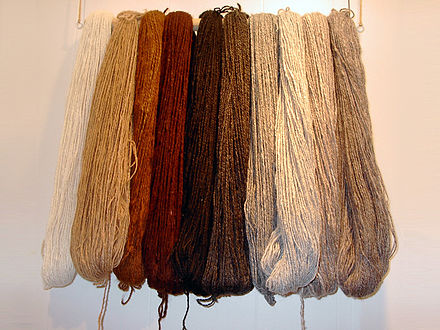
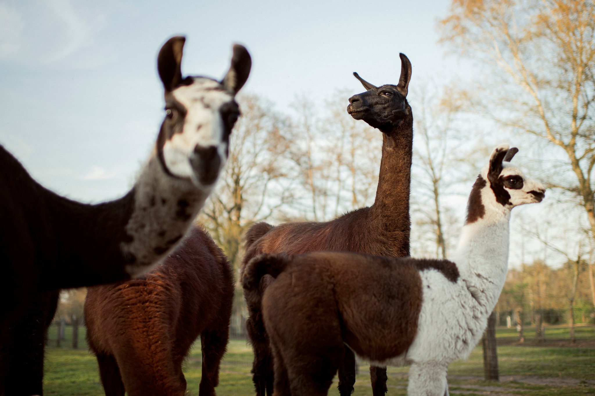

Lâna de alpaca este ușoară, moale și călduroasă și în total există 52 de nuanțe naturale superbe ale lânii provenite de la alpaca, de la negru intens la castaniu și alb ca zăpada.
Lâna de alpaca este moale și posedă proprietăți care o fac rezistentă la apă și flacără, făcându-o o marfă valoroasă.
Mai mult, hainele țesute din această lână sunt hipoalergenice deoarece țesăturile din lâna de alpaca au proprietăți antiseptice și nu provoacă reacții alergice, nici nu se încrețesc și nici nu se întind.

Medicii și cercetătorii au stabilit că lamele posedă anticorpi care sunt potriviți pentru tratarea anumitor boli. Oamenii de știință au studiat modul în care lamele ar putea contribui la lupta împotriva coronavirusurilor, inclusiv MERS și SARS-CoV-2 (care cauzează COVID-19 ).
Anticorpii lamei Winter, din Belgia, au neutralizat coronavirusul și alte infecții în experimentele de laborator.

În cartea recordurilor este prezentată o lamă numită Caspa, care a realizat cel mai înalt salt de bară liberă de o lamă - 1,13 m (3 ft 8,5 in).
Datorită preferinței alpacalelor de a folosi o grămadă de bălegar pentru eliminarea deșeurilor corporale, unele alpaca au fost dresate cu succes în casă.
Pentru că alpaca este un animal foarte blând, în Germania este folosită în terapia asistată de animale. S-a demonstrat că alpaca transmite o stare de liniște la om și îl ajută să se relaxeze.